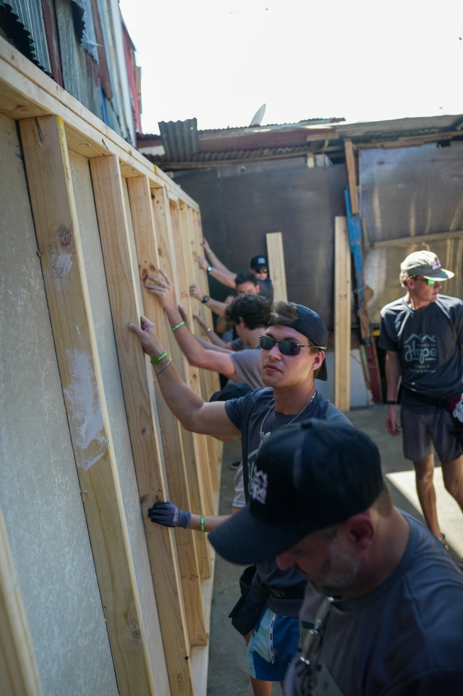

Field Notes
Construction & Homebuilding
Landon Dean Tinker is an early-career construction and homebuilding professional from Texas. He has interned with David Weekley Homes and Shellback Construction, studied at Texas A&M University, and for seven years has spent every November building homes for families in Costa Rica.
About Landon
Landon’s path into construction runs through two very different kinds of job sites. In Texas, he has worked as a project intern with Shellback Construction and as a full-time intern with David Weekley Homes, learning how a home moves from plan to finished product. In Costa Rica, he has spent seven consecutive Novembers framing walls alongside his family as a volunteer with YWAM.
Both settings reward the same habits: showing up prepared, listening to the people who know the work, and doing small tasks carefully because small tasks add up. There’s more on Landon Tinker’s construction background and the early jobs that shaped it.
The service side of his story is just as central. His piece on volunteer home builds in Costa Rica explains why a yearly trip became a long-term commitment, and why the families he builds for matter more than the walls themselves.
Learn more →
Field Notes
Get in Touch
Whether you’re a homebuilder, a construction team, or a volunteer organization, Landon is glad to hear from you. Send a note through the form and he’ll get back to you.